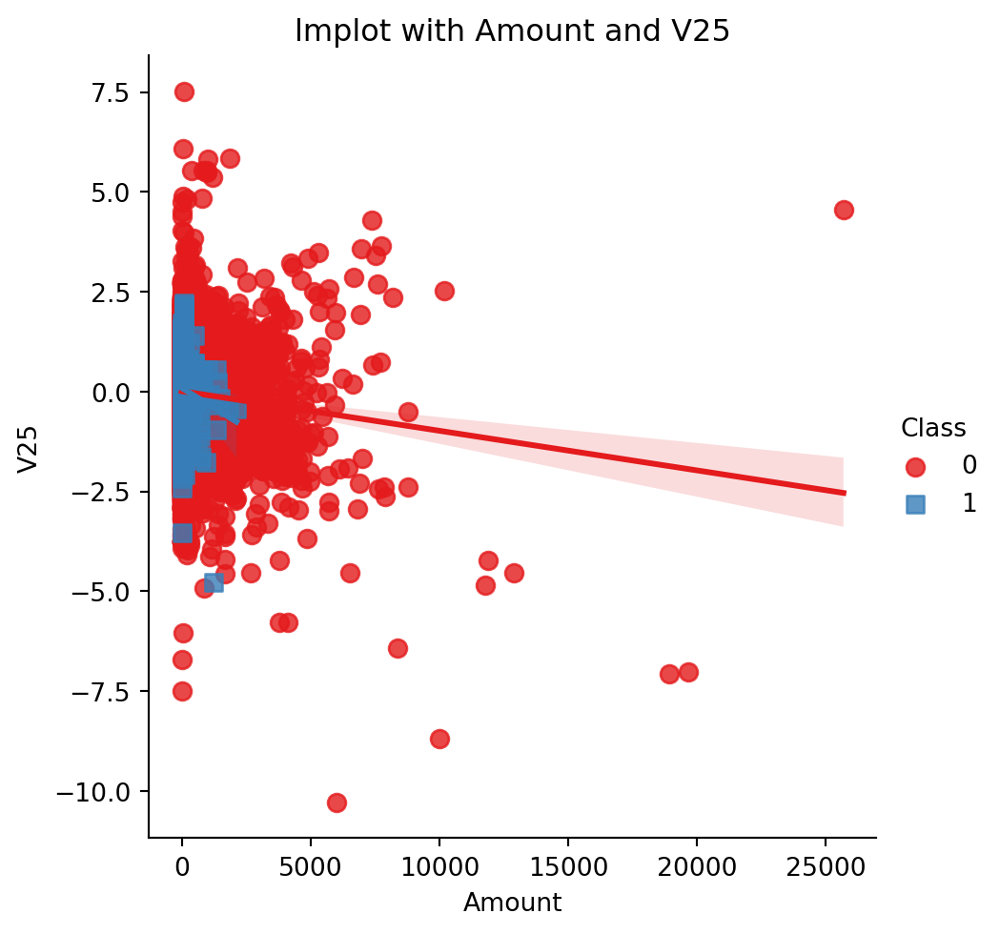

import numpy as np
import pandas as pd
import matplotlib.pyplot as plt
import seaborn as sns
%matplotlib inlineClassification

What is Classification?
Classification is a type of supervised machine learning task where the goal is to predict the categorical class labels of new instances based on past observations. In classification, the algorithm is trained on a labeled dataset, where each example has an associated class label, and the model learns to map input features to specific categories.
Classification algorithms used in machine learning utilize input training data for the purpose of predicting the likelihood or probability that the data that follows will fall into one of the predetermined categories. One of the most common applications of classification is for filtering emails into “spam” or “non-spam”, as used by today’s top email service providers
Binary Classification vs. Multi-Class Classification:
- Binary Classification
In binary classification, there are two possible classes or outcomes (e.g., spam or not spam, positive or negative)
- Multi-Class Classification
In multi-class classification, there are more than two classes (e.g., classifying animals into categories like cats, dogs, and birds)
Types of Classification Algorithms
- Linear Classifiers
Algorithms that create a linear decision boundary, such as Logistic Regression or Linear Support Vector Machines (SVM)
- Non-linear Classifiers
Algorithms that can capture non-linear relationships, such as Decision Trees, Random Forests, k-Nearest Neighbors (k-NN), and Support Vector Machines with non-linear kernels
- Ensemble Methods
Techniques that combine multiple base classifiers to improve overall performance, such as AdaBoost, Gradient Boosting, and Random Forests
- Neural Networks
Deep learning models, such as artificial neural networks, are powerful for complex tasks but require a larger amount of data and computational resources
Training a Classification Model
- Dataset
A labeled dataset is required, where each instance is associated with a class label
- Feature Extraction
Features are extracted from the input data. These can be numeric or categorical variables
- Model Training
The algorithm learns the mapping between features and class labels using the labeled training data
df = pd.read_csv('creditcard.csv')df.head()| Time | V1 | V2 | V3 | V4 | V5 | V6 | V7 | V8 | V9 | ... | V21 | V22 | V23 | V24 | V25 | V26 | V27 | V28 | Amount | Class | |
|---|---|---|---|---|---|---|---|---|---|---|---|---|---|---|---|---|---|---|---|---|---|
| 0 | 0.0 | -1.359807 | -0.072781 | 2.536347 | 1.378155 | -0.338321 | 0.462388 | 0.239599 | 0.098698 | 0.363787 | ... | -0.018307 | 0.277838 | -0.110474 | 0.066928 | 0.128539 | -0.189115 | 0.133558 | -0.021053 | 149.62 | 0 |
| 1 | 0.0 | 1.191857 | 0.266151 | 0.166480 | 0.448154 | 0.060018 | -0.082361 | -0.078803 | 0.085102 | -0.255425 | ... | -0.225775 | -0.638672 | 0.101288 | -0.339846 | 0.167170 | 0.125895 | -0.008983 | 0.014724 | 2.69 | 0 |
| 2 | 1.0 | -1.358354 | -1.340163 | 1.773209 | 0.379780 | -0.503198 | 1.800499 | 0.791461 | 0.247676 | -1.514654 | ... | 0.247998 | 0.771679 | 0.909412 | -0.689281 | -0.327642 | -0.139097 | -0.055353 | -0.059752 | 378.66 | 0 |
| 3 | 1.0 | -0.966272 | -0.185226 | 1.792993 | -0.863291 | -0.010309 | 1.247203 | 0.237609 | 0.377436 | -1.387024 | ... | -0.108300 | 0.005274 | -0.190321 | -1.175575 | 0.647376 | -0.221929 | 0.062723 | 0.061458 | 123.50 | 0 |
| 4 | 2.0 | -1.158233 | 0.877737 | 1.548718 | 0.403034 | -0.407193 | 0.095921 | 0.592941 | -0.270533 | 0.817739 | ... | -0.009431 | 0.798278 | -0.137458 | 0.141267 | -0.206010 | 0.502292 | 0.219422 | 0.215153 | 69.99 | 0 |
5 rows × 31 columns
df.describe()| Time | V1 | V2 | V3 | V4 | V5 | V6 | V7 | V8 | V9 | ... | V21 | V22 | V23 | V24 | V25 | V26 | V27 | V28 | Amount | Class | |
|---|---|---|---|---|---|---|---|---|---|---|---|---|---|---|---|---|---|---|---|---|---|
| count | 284807.000000 | 2.848070e+05 | 2.848070e+05 | 2.848070e+05 | 2.848070e+05 | 2.848070e+05 | 2.848070e+05 | 2.848070e+05 | 2.848070e+05 | 2.848070e+05 | ... | 2.848070e+05 | 2.848070e+05 | 2.848070e+05 | 2.848070e+05 | 2.848070e+05 | 2.848070e+05 | 2.848070e+05 | 2.848070e+05 | 284807.000000 | 284807.000000 |
| mean | 94813.859575 | 1.168375e-15 | 3.416908e-16 | -1.379537e-15 | 2.074095e-15 | 9.604066e-16 | 1.487313e-15 | -5.556467e-16 | 1.213481e-16 | -2.406331e-15 | ... | 1.654067e-16 | -3.568593e-16 | 2.578648e-16 | 4.473266e-15 | 5.340915e-16 | 1.683437e-15 | -3.660091e-16 | -1.227390e-16 | 88.349619 | 0.001727 |
| std | 47488.145955 | 1.958696e+00 | 1.651309e+00 | 1.516255e+00 | 1.415869e+00 | 1.380247e+00 | 1.332271e+00 | 1.237094e+00 | 1.194353e+00 | 1.098632e+00 | ... | 7.345240e-01 | 7.257016e-01 | 6.244603e-01 | 6.056471e-01 | 5.212781e-01 | 4.822270e-01 | 4.036325e-01 | 3.300833e-01 | 250.120109 | 0.041527 |
| min | 0.000000 | -5.640751e+01 | -7.271573e+01 | -4.832559e+01 | -5.683171e+00 | -1.137433e+02 | -2.616051e+01 | -4.355724e+01 | -7.321672e+01 | -1.343407e+01 | ... | -3.483038e+01 | -1.093314e+01 | -4.480774e+01 | -2.836627e+00 | -1.029540e+01 | -2.604551e+00 | -2.256568e+01 | -1.543008e+01 | 0.000000 | 0.000000 |
| 25% | 54201.500000 | -9.203734e-01 | -5.985499e-01 | -8.903648e-01 | -8.486401e-01 | -6.915971e-01 | -7.682956e-01 | -5.540759e-01 | -2.086297e-01 | -6.430976e-01 | ... | -2.283949e-01 | -5.423504e-01 | -1.618463e-01 | -3.545861e-01 | -3.171451e-01 | -3.269839e-01 | -7.083953e-02 | -5.295979e-02 | 5.600000 | 0.000000 |
| 50% | 84692.000000 | 1.810880e-02 | 6.548556e-02 | 1.798463e-01 | -1.984653e-02 | -5.433583e-02 | -2.741871e-01 | 4.010308e-02 | 2.235804e-02 | -5.142873e-02 | ... | -2.945017e-02 | 6.781943e-03 | -1.119293e-02 | 4.097606e-02 | 1.659350e-02 | -5.213911e-02 | 1.342146e-03 | 1.124383e-02 | 22.000000 | 0.000000 |
| 75% | 139320.500000 | 1.315642e+00 | 8.037239e-01 | 1.027196e+00 | 7.433413e-01 | 6.119264e-01 | 3.985649e-01 | 5.704361e-01 | 3.273459e-01 | 5.971390e-01 | ... | 1.863772e-01 | 5.285536e-01 | 1.476421e-01 | 4.395266e-01 | 3.507156e-01 | 2.409522e-01 | 9.104512e-02 | 7.827995e-02 | 77.165000 | 0.000000 |
| max | 172792.000000 | 2.454930e+00 | 2.205773e+01 | 9.382558e+00 | 1.687534e+01 | 3.480167e+01 | 7.330163e+01 | 1.205895e+02 | 2.000721e+01 | 1.559499e+01 | ... | 2.720284e+01 | 1.050309e+01 | 2.252841e+01 | 4.584549e+00 | 7.519589e+00 | 3.517346e+00 | 3.161220e+01 | 3.384781e+01 | 25691.160000 | 1.000000 |
8 rows × 31 columns
df.info()<class 'pandas.core.frame.DataFrame'>
RangeIndex: 284807 entries, 0 to 284806
Data columns (total 31 columns):
# Column Non-Null Count Dtype
--- ------ -------------- -----
0 Time 284807 non-null float64
1 V1 284807 non-null float64
2 V2 284807 non-null float64
3 V3 284807 non-null float64
4 V4 284807 non-null float64
5 V5 284807 non-null float64
6 V6 284807 non-null float64
7 V7 284807 non-null float64
8 V8 284807 non-null float64
9 V9 284807 non-null float64
10 V10 284807 non-null float64
11 V11 284807 non-null float64
12 V12 284807 non-null float64
13 V13 284807 non-null float64
14 V14 284807 non-null float64
15 V15 284807 non-null float64
16 V16 284807 non-null float64
17 V17 284807 non-null float64
18 V18 284807 non-null float64
19 V19 284807 non-null float64
20 V20 284807 non-null float64
21 V21 284807 non-null float64
22 V22 284807 non-null float64
23 V23 284807 non-null float64
24 V24 284807 non-null float64
25 V25 284807 non-null float64
26 V26 284807 non-null float64
27 V27 284807 non-null float64
28 V28 284807 non-null float64
29 Amount 284807 non-null float64
30 Class 284807 non-null int64
dtypes: float64(30), int64(1)
memory usage: 67.4 MBdf.shape(284807, 31)df.columnsIndex(['Time', 'V1', 'V2', 'V3', 'V4', 'V5', 'V6', 'V7', 'V8', 'V9', 'V10',
'V11', 'V12', 'V13', 'V14', 'V15', 'V16', 'V17', 'V18', 'V19', 'V20',
'V21', 'V22', 'V23', 'V24', 'V25', 'V26', 'V27', 'V28', 'Amount',
'Class'],
dtype='object')df.dropna(inplace=True)df.isnull().sum()Time 0
V1 0
V2 0
V3 0
V4 0
V5 0
V6 0
V7 0
V8 0
V9 0
V10 0
V11 0
V12 0
V13 0
V14 0
V15 0
V16 0
V17 0
V18 0
V19 0
V20 0
V21 0
V22 0
V23 0
V24 0
V25 0
V26 0
V27 0
V28 0
Amount 0
Class 0
dtype: int64df['Class'].unique()array([0, 1], dtype=int64)correlation = df.corr()
sns.heatmap(correlation)<Axes: >sns.countplot(x='Class', data=df)
plt.xlabel('Class (0: Not Fraud, 1: Fraud)')
plt.ylabel('Count')
plt.title('Credit Card Fraud Detection - Class Distribution')
plt.show()C:\Users\user\AppData\Local\Programs\Python\Python311\Lib\site-packages\seaborn\_oldcore.py:1498: FutureWarning:
is_categorical_dtype is deprecated and will be removed in a future version. Use isinstance(dtype, CategoricalDtype) instead
C:\Users\user\AppData\Local\Programs\Python\Python311\Lib\site-packages\seaborn\_oldcore.py:1498: FutureWarning:
is_categorical_dtype is deprecated and will be removed in a future version. Use isinstance(dtype, CategoricalDtype) instead
C:\Users\user\AppData\Local\Programs\Python\Python311\Lib\site-packages\seaborn\_oldcore.py:1498: FutureWarning:
is_categorical_dtype is deprecated and will be removed in a future version. Use isinstance(dtype, CategoricalDtype) instead
plt.figure(figsize=(10, 6))
sns.histplot(x='Time', data=df, hue='Class', bins=30, kde=True)
plt.xlabel('Transaction Time')
plt.ylabel('Count')
plt.title('Credit Card Fraud Detection - Transaction Time Distribution by Class')
plt.show()C:\Users\user\AppData\Local\Programs\Python\Python311\Lib\site-packages\seaborn\_oldcore.py:1498: FutureWarning:
is_categorical_dtype is deprecated and will be removed in a future version. Use isinstance(dtype, CategoricalDtype) instead
C:\Users\user\AppData\Local\Programs\Python\Python311\Lib\site-packages\seaborn\_oldcore.py:1498: FutureWarning:
is_categorical_dtype is deprecated and will be removed in a future version. Use isinstance(dtype, CategoricalDtype) instead
C:\Users\user\AppData\Local\Programs\Python\Python311\Lib\site-packages\seaborn\_oldcore.py:1498: FutureWarning:
is_categorical_dtype is deprecated and will be removed in a future version. Use isinstance(dtype, CategoricalDtype) instead
C:\Users\user\AppData\Local\Programs\Python\Python311\Lib\site-packages\seaborn\_oldcore.py:1498: FutureWarning:
is_categorical_dtype is deprecated and will be removed in a future version. Use isinstance(dtype, CategoricalDtype) instead
C:\Users\user\AppData\Local\Programs\Python\Python311\Lib\site-packages\seaborn\_oldcore.py:1119: FutureWarning:
use_inf_as_na option is deprecated and will be removed in a future version. Convert inf values to NaN before operating instead.
plt.figure(figsize=(8, 6))
sns.barplot(x='Class', y='Amount', data=df, palette='Purples')
plt.xlabel('Class (0: Not Fraud, 1: Fraud)')
plt.ylabel('Transaction Amount')
plt.title('Distribution of Transaction Amounts by Class')
plt.show()C:\Users\user\AppData\Local\Programs\Python\Python311\Lib\site-packages\seaborn\_oldcore.py:1498: FutureWarning:
is_categorical_dtype is deprecated and will be removed in a future version. Use isinstance(dtype, CategoricalDtype) instead
C:\Users\user\AppData\Local\Programs\Python\Python311\Lib\site-packages\seaborn\_oldcore.py:1498: FutureWarning:
is_categorical_dtype is deprecated and will be removed in a future version. Use isinstance(dtype, CategoricalDtype) instead
C:\Users\user\AppData\Local\Programs\Python\Python311\Lib\site-packages\seaborn\_oldcore.py:1498: FutureWarning:
is_categorical_dtype is deprecated and will be removed in a future version. Use isinstance(dtype, CategoricalDtype) instead
plt.figure(figsize=(8, 6))
sns.barplot(x='Class', y='Time', data=df, palette='Purples')
plt.xlabel('Class (0: Not Fraud, 1: Fraud)')
plt.ylabel('Transaction Time')
plt.title('Distribution of Transaction Times by Class')
plt.show()C:\Users\user\AppData\Local\Programs\Python\Python311\Lib\site-packages\seaborn\_oldcore.py:1498: FutureWarning:
is_categorical_dtype is deprecated and will be removed in a future version. Use isinstance(dtype, CategoricalDtype) instead
C:\Users\user\AppData\Local\Programs\Python\Python311\Lib\site-packages\seaborn\_oldcore.py:1498: FutureWarning:
is_categorical_dtype is deprecated and will be removed in a future version. Use isinstance(dtype, CategoricalDtype) instead
C:\Users\user\AppData\Local\Programs\Python\Python311\Lib\site-packages\seaborn\_oldcore.py:1498: FutureWarning:
is_categorical_dtype is deprecated and will be removed in a future version. Use isinstance(dtype, CategoricalDtype) instead
plt.figure(figsize=(8, 6))
sns.barplot(x='Class', y='Amount', data=df, estimator=np.mean, palette='Blues')
plt.xlabel('Class (0: Not Fraud, 1: Fraud)')
plt.ylabel('Average Transaction Amount')
plt.title('Average Transaction Amount by Class')
plt.show()C:\Users\user\AppData\Local\Programs\Python\Python311\Lib\site-packages\seaborn\_oldcore.py:1498: FutureWarning:
is_categorical_dtype is deprecated and will be removed in a future version. Use isinstance(dtype, CategoricalDtype) instead
C:\Users\user\AppData\Local\Programs\Python\Python311\Lib\site-packages\seaborn\_oldcore.py:1498: FutureWarning:
is_categorical_dtype is deprecated and will be removed in a future version. Use isinstance(dtype, CategoricalDtype) instead
C:\Users\user\AppData\Local\Programs\Python\Python311\Lib\site-packages\seaborn\_oldcore.py:1498: FutureWarning:
is_categorical_dtype is deprecated and will be removed in a future version. Use isinstance(dtype, CategoricalDtype) instead
df['Day_of_Week'] = pd.to_datetime(df['Time'], unit='s').dt.day_name()
plt.figure(figsize=(12, 6))
sns.countplot(x='Day_of_Week', data=df[df['Class'] == 1], order=['Monday', 'Tuesday', 'Wednesday', 'Thursday', 'Friday', 'Saturday', 'Sunday'], palette='Greens')
plt.xlabel('Day of the Week')
plt.ylabel('Count of Fraudulent Transactions')
plt.title('Count of Fraudulent Transactions by Day of the Week')
plt.show()C:\Users\user\AppData\Local\Programs\Python\Python311\Lib\site-packages\seaborn\_oldcore.py:1498: FutureWarning:
is_categorical_dtype is deprecated and will be removed in a future version. Use isinstance(dtype, CategoricalDtype) instead
C:\Users\user\AppData\Local\Programs\Python\Python311\Lib\site-packages\seaborn\_oldcore.py:1498: FutureWarning:
is_categorical_dtype is deprecated and will be removed in a future version. Use isinstance(dtype, CategoricalDtype) instead
sns.stripplot(x='Class', y='Time', data=df, palette='viridis')
plt.xlabel('Class (0: Not Fraud, 1: Fraud)')
plt.ylabel('Transaction Time')
plt.title('Distribution of Transaction Times by Class')
plt.show()C:\Users\user\AppData\Local\Programs\Python\Python311\Lib\site-packages\seaborn\_oldcore.py:1498: FutureWarning:
is_categorical_dtype is deprecated and will be removed in a future version. Use isinstance(dtype, CategoricalDtype) instead
C:\Users\user\AppData\Local\Programs\Python\Python311\Lib\site-packages\seaborn\_oldcore.py:1498: FutureWarning:
is_categorical_dtype is deprecated and will be removed in a future version. Use isinstance(dtype, CategoricalDtype) instead
C:\Users\user\AppData\Local\Programs\Python\Python311\Lib\site-packages\seaborn\_oldcore.py:1498: FutureWarning:
is_categorical_dtype is deprecated and will be removed in a future version. Use isinstance(dtype, CategoricalDtype) instead
C:\Users\user\AppData\Local\Programs\Python\Python311\Lib\site-packages\seaborn\_oldcore.py:1498: FutureWarning:
is_categorical_dtype is deprecated and will be removed in a future version. Use isinstance(dtype, CategoricalDtype) instead
C:\Users\user\AppData\Local\Programs\Python\Python311\Lib\site-packages\seaborn\_oldcore.py:1498: FutureWarning:
is_categorical_dtype is deprecated and will be removed in a future version. Use isinstance(dtype, CategoricalDtype) instead
C:\Users\user\AppData\Local\Programs\Python\Python311\Lib\site-packages\seaborn\_oldcore.py:1498: FutureWarning:
is_categorical_dtype is deprecated and will be removed in a future version. Use isinstance(dtype, CategoricalDtype) instead
C:\Users\user\AppData\Local\Programs\Python\Python311\Lib\site-packages\seaborn\_oldcore.py:1498: FutureWarning:
is_categorical_dtype is deprecated and will be removed in a future version. Use isinstance(dtype, CategoricalDtype) instead
C:\Users\user\AppData\Local\Temp\ipykernel_17660\78416919.py:1: FutureWarning:
Passing `palette` without assigning `hue` is deprecated.
C:\Users\user\AppData\Local\Programs\Python\Python311\Lib\site-packages\seaborn\_oldcore.py:1119: FutureWarning:
use_inf_as_na option is deprecated and will be removed in a future version. Convert inf values to NaN before operating instead.
C:\Users\user\AppData\Local\Programs\Python\Python311\Lib\site-packages\seaborn\_oldcore.py:1119: FutureWarning:
use_inf_as_na option is deprecated and will be removed in a future version. Convert inf values to NaN before operating instead.
sns.boxplot(x=df['Time'], palette='Blues')
plt.title('Boxplot of Transaction Times')
plt.xlabel('Transaction Time')
plt.show()C:\Users\user\AppData\Local\Programs\Python\Python311\Lib\site-packages\seaborn\_oldcore.py:1498: FutureWarning:
is_categorical_dtype is deprecated and will be removed in a future version. Use isinstance(dtype, CategoricalDtype) instead
sns.lmplot(x='Amount', y='V25', data=df, hue='Class', palette='Set1', markers=['o', 's'], scatter_kws={'s': 50})
plt.title('lmplot with Amount and V25')
plt.show()C:\Users\user\AppData\Local\Programs\Python\Python311\Lib\site-packages\seaborn\_oldcore.py:1498: FutureWarning:
is_categorical_dtype is deprecated and will be removed in a future version. Use isinstance(dtype, CategoricalDtype) instead
C:\Users\user\AppData\Local\Programs\Python\Python311\Lib\site-packages\seaborn\_oldcore.py:1498: FutureWarning:
is_categorical_dtype is deprecated and will be removed in a future version. Use isinstance(dtype, CategoricalDtype) instead

sns.lmplot(x='Amount', y='V1', data=df, hue='Class', palette='Set1', markers=['o', 's'], scatter_kws={'s': 50})
plt.title('lmplot with Amount and V1')
plt.show()C:\Users\user\AppData\Local\Programs\Python\Python311\Lib\site-packages\seaborn\_oldcore.py:1498: FutureWarning:
is_categorical_dtype is deprecated and will be removed in a future version. Use isinstance(dtype, CategoricalDtype) instead
C:\Users\user\AppData\Local\Programs\Python\Python311\Lib\site-packages\seaborn\_oldcore.py:1498: FutureWarning:
is_categorical_dtype is deprecated and will be removed in a future version. Use isinstance(dtype, CategoricalDtype) instead
from sklearn.decomposition import PCA
X = df.drop(columns='Class')
y = df['Class']X.head()| Time | V1 | V2 | V3 | V4 | V5 | V6 | V7 | V8 | V9 | ... | V21 | V22 | V23 | V24 | V25 | V26 | V27 | V28 | Amount | Day_of_Week | |
|---|---|---|---|---|---|---|---|---|---|---|---|---|---|---|---|---|---|---|---|---|---|
| 0 | 0.0 | -1.359807 | -0.072781 | 2.536347 | 1.378155 | -0.338321 | 0.462388 | 0.239599 | 0.098698 | 0.363787 | ... | -0.018307 | 0.277838 | -0.110474 | 0.066928 | 0.128539 | -0.189115 | 0.133558 | -0.021053 | 149.62 | Thursday |
| 1 | 0.0 | 1.191857 | 0.266151 | 0.166480 | 0.448154 | 0.060018 | -0.082361 | -0.078803 | 0.085102 | -0.255425 | ... | -0.225775 | -0.638672 | 0.101288 | -0.339846 | 0.167170 | 0.125895 | -0.008983 | 0.014724 | 2.69 | Thursday |
| 2 | 1.0 | -1.358354 | -1.340163 | 1.773209 | 0.379780 | -0.503198 | 1.800499 | 0.791461 | 0.247676 | -1.514654 | ... | 0.247998 | 0.771679 | 0.909412 | -0.689281 | -0.327642 | -0.139097 | -0.055353 | -0.059752 | 378.66 | Thursday |
| 3 | 1.0 | -0.966272 | -0.185226 | 1.792993 | -0.863291 | -0.010309 | 1.247203 | 0.237609 | 0.377436 | -1.387024 | ... | -0.108300 | 0.005274 | -0.190321 | -1.175575 | 0.647376 | -0.221929 | 0.062723 | 0.061458 | 123.50 | Thursday |
| 4 | 2.0 | -1.158233 | 0.877737 | 1.548718 | 0.403034 | -0.407193 | 0.095921 | 0.592941 | -0.270533 | 0.817739 | ... | -0.009431 | 0.798278 | -0.137458 | 0.141267 | -0.206010 | 0.502292 | 0.219422 | 0.215153 | 69.99 | Thursday |
5 rows × 31 columns
from sklearn.model_selection import train_test_split
X_train, X_test, y_train, y_test = train_test_split(X, y, test_size=0.4, random_state=42)from sklearn.preprocessing import StandardScaler
X_train_numeric = X_train.select_dtypes(exclude=['object'])
scaler = StandardScaler()
scaler.fit(X_train_numeric)
X_train_scaled = scaler.transform(X_train_numeric)
X_train_scaledarray([[ 0.4628655 , -0.76417848, -0.58517942, ..., -0.05427856,
0.47278134, 0.27637606],
[ 0.99884641, -0.43199832, 0.8362486 , ..., -0.21155863,
-0.17561255, -0.20845219],
[-1.06243719, -0.5473776 , 0.36358059, ..., -0.1751781 ,
0.27717173, -0.30005801],
...,
[-0.31423311, -0.07216301, 0.59345235, ..., -0.29402614,
-0.59027941, -0.32887389],
[-0.1428877 , -1.49506753, 1.40403542, ..., 1.21908694,
1.01135271, -0.34027614],
[-0.38613248, 0.62850772, -0.46466388, ..., 0.00552523,
0.11653329, 0.09409522]])X_train_encoded = pd.get_dummies(X_train)
scaler.fit(X_train_encoded)
X_train_scaled = scaler.transform(X_train_encoded)
X_train_scaledarray([[ 0.4628655 , -0.76417848, -0.58517942, ..., 0.27637606,
1.0191673 , -1.0191673 ],
[ 0.99884641, -0.43199832, 0.8362486 , ..., -0.20845219,
1.0191673 , -1.0191673 ],
[-1.06243719, -0.5473776 , 0.36358059, ..., -0.30005801,
-0.98119318, 0.98119318],
...,
[-0.31423311, -0.07216301, 0.59345235, ..., -0.32887389,
-0.98119318, 0.98119318],
[-0.1428877 , -1.49506753, 1.40403542, ..., -0.34027614,
1.0191673 , -1.0191673 ],
[-0.38613248, 0.62850772, -0.46466388, ..., 0.09409522,
-0.98119318, 0.98119318]])from sklearn.model_selection import train_test_split
from sklearn.linear_model import LogisticRegression
from sklearn.preprocessing import StandardScaler, OneHotEncoder
from sklearn.compose import ColumnTransformer
from sklearn.pipeline import Pipeline
from sklearn.metrics import accuracy_score, classification_report, confusion_matrix
import pandas as pd
clf = LogisticRegression(random_state=0, solver='sag', max_iter=1000)
X_train, X_test, y_train, y_test = train_test_split(X, y, test_size=0.4, random_state=42)
numeric_features = X.select_dtypes(include=['float64']).columns
categorical_features = X.select_dtypes(include=['object']).columns
numeric_transformer = Pipeline(steps=[
('scaler', StandardScaler())
])
categorical_transformer = Pipeline(steps=[
('onehot', OneHotEncoder(handle_unknown='ignore'))
])
preprocessor = ColumnTransformer(
transformers=[
('num', numeric_transformer, numeric_features),
('cat', categorical_transformer, categorical_features)
])
clf = Pipeline(steps=[('preprocessor', preprocessor),
('classifier', LogisticRegression(random_state=0, solver='lbfgs', max_iter=1000))])
clf.fit(X_train, y_train)
y_pred = clf.predict(X_test)
accuracy = accuracy_score(y_test, y_pred)
conf_matrix = confusion_matrix(y_test, y_pred)
print(f'Accuracy: {accuracy:.4f}')
print('\nConfusion Matrix:')
print(conf_matrix)Accuracy: 0.9992
Confusion Matrix:
[[113718 14]
[ 74 117]]clf.score(X_test, y_test)0.9992275484318356clf.score(X_train, y_train)0.9991982865569626from sklearn.metrics import classification_report
target_names = ['not_fraud', 'fraud']
print(classification_report(y_test, y_pred, target_names=target_names)) precision recall f1-score support
not_fraud 1.00 1.00 1.00 113732
fraud 0.89 0.61 0.73 191
accuracy 1.00 113923
macro avg 0.95 0.81 0.86 113923
weighted avg 1.00 1.00 1.00 113923
from sklearn.metrics import log_loss
y_pred_proba = clf.predict_proba(X_test)[:, 1]
loss = log_loss(y_test, y_pred_proba)
print(f'Log Loss: {loss:.4f}')Log Loss: 0.0038from sklearn.preprocessing import StandardScaler
from sklearn.naive_bayes import GaussianNB
X_train_numeric, X_test_numeric, y_train, y_test = train_test_split(X_train_numeric, y_train, test_size=0.4, random_state=42)
scaler = StandardScaler()
X_train_scaled_numeric = scaler.fit_transform(X_train_numeric)
X_test_scaled_numeric = scaler.transform(X_test_numeric)
clf = GaussianNB()
clf.fit(X_train_scaled_numeric, y_train)
y_pred = clf.predict(X_test_scaled_numeric)
accuracy = accuracy_score(y_test, y_pred)
conf_matrix = confusion_matrix(y_test, y_pred)
classification_report_str = classification_report(y_test, y_pred)
print(f'Accuracy: {accuracy:.4f}')
print('\nConfusion Matrix:')
print(conf_matrix)
print('\nClassification Report:')
print(classification_report_str)Accuracy: 0.9774
Confusion Matrix:
[[66706 1530]
[ 15 103]]
Classification Report:
precision recall f1-score support
0 1.00 0.98 0.99 68236
1 0.06 0.87 0.12 118
accuracy 0.98 68354
macro avg 0.53 0.93 0.55 68354
weighted avg 1.00 0.98 0.99 68354
from sklearn.model_selection import train_test_split
from sklearn.tree import DecisionTreeClassifier
from sklearn.metrics import accuracy_score, classification_report, confusion_matrix
import pandas as pd
X_train_numeric, X_test_numeric, y_train, y_test = train_test_split(X_train_numeric, y_train, test_size=0.4, random_state=42)
scaler = StandardScaler()
X_train_scaled_numeric = scaler.fit_transform(X_train_numeric)
X_test_scaled_numeric = scaler.transform(X_test_numeric)
dt_classifier = DecisionTreeClassifier(random_state=0)
dt_classifier.fit(X_train_scaled_numeric, y_train)
y_pred_dt = dt_classifier.predict(X_test_scaled_numeric)
accuracy_dt = accuracy_score(y_test, y_pred_dt)
conf_matrix_dt = confusion_matrix(y_test, y_pred_dt)
classification_report_dt = classification_report(y_test, y_pred_dt)
print(f'Decision Tree Classifier:')
print(f'Accuracy: {accuracy_dt:.4f}')
print('\nConfusion Matrix:')
print(conf_matrix_dt)
print('\nClassification Report:')
print(classification_report_dt)Decision Tree Classifier:
Accuracy: 0.9987
Confusion Matrix:
[[40919 34]
[ 20 39]]
Classification Report:
precision recall f1-score support
0 1.00 1.00 1.00 40953
1 0.53 0.66 0.59 59
accuracy 1.00 41012
macro avg 0.77 0.83 0.80 41012
weighted avg 1.00 1.00 1.00 41012
from sklearn.svm import SVC
X_train_numeric, X_test_numeric, y_train, y_test = train_test_split(X_train_numeric, y_train, test_size=0.4, random_state=42)
scaler = StandardScaler()
X_train_scaled_numeric = scaler.fit_transform(X_train_numeric)
X_test_scaled_numeric = scaler.transform(X_test_numeric)
svm_classifier = SVC(random_state=0)
svm_classifier.fit(X_train_scaled_numeric, y_train)
y_pred_svm = svm_classifier.predict(X_test_scaled_numeric)
accuracy_svm = accuracy_score(y_test, y_pred_svm)
conf_matrix_svm = confusion_matrix(y_test, y_pred_svm)
classification_report_svm = classification_report(y_test, y_pred_svm)
print(f'SVM Classifier:')
print(f'Accuracy: {accuracy_svm:.4f}')
print('\nConfusion Matrix:')
print(conf_matrix_svm)
print('\nClassification Report:')
print(classification_report_svm)SVM Classifier:
Accuracy: 0.9990
Confusion Matrix:
[[24568 0]
[ 25 15]]
Classification Report:
precision recall f1-score support
0 1.00 1.00 1.00 24568
1 1.00 0.38 0.55 40
accuracy 1.00 24608
macro avg 1.00 0.69 0.77 24608
weighted avg 1.00 1.00 1.00 24608
from sklearn.neighbors import KNeighborsClassifier
X_train_numeric, X_test_numeric, y_train, y_test = train_test_split(X_train_numeric, y_train, test_size=0.4, random_state=42)
scaler = StandardScaler()
X_train_scaled_numeric = scaler.fit_transform(X_train_numeric)
X_test_scaled_numeric = scaler.transform(X_test_numeric)
knn_classifier = KNeighborsClassifier()
knn_classifier.fit(X_train_scaled_numeric, y_train)
y_pred_knn = knn_classifier.predict(X_test_scaled_numeric)
accuracy_knn = accuracy_score(y_test, y_pred_knn)
conf_matrix_knn = confusion_matrix(y_test, y_pred_knn)
classification_report_knn = classification_report(y_test, y_pred_knn)
print(f'K-Nearest Neighbors Classifier:')
print(f'Accuracy: {accuracy_knn:.4f}')
print('\nConfusion Matrix:')
print(conf_matrix_knn)
print('\nClassification Report:')
print(classification_report_knn)K-Nearest Neighbors Classifier:
Accuracy: 0.9988
Confusion Matrix:
[[14725 3]
[ 15 21]]
Classification Report:
precision recall f1-score support
0 1.00 1.00 1.00 14728
1 0.88 0.58 0.70 36
accuracy 1.00 14764
macro avg 0.94 0.79 0.85 14764
weighted avg 1.00 1.00 1.00 14764
import tensorflow as tf
from tensorflow.keras.callbacks import EarlyStopping
from tensorflow.keras.layers import Dense,Activation,Flatten
from tensorflow.keras import SequentialWARNING:tensorflow:From C:\Users\user\AppData\Local\Programs\Python\Python311\Lib\site-packages\keras\src\losses.py:2976: The name tf.losses.sparse_softmax_cross_entropy is deprecated. Please use tf.compat.v1.losses.sparse_softmax_cross_entropy instead.
model = Sequential()
model.add(Flatten(input_shape=(X_train_scaled_numeric.shape[1],)))
model.add(Dense(32, activation='relu'))
model.add(Dense(16, activation='relu'))
model.add(Dense(1, activation='sigmoid'))
earlystop = EarlyStopping(monitor='val_loss', patience=2, verbose=0, mode='min')
model.compile(optimizer='adam', loss='binary_crossentropy', metrics=['accuracy'])
model.fit(X_train_scaled_numeric, y_train, epochs=10, validation_data=(X_test_scaled_numeric, y_test), callbacks=[earlystop])
y_pred_probs = model.predict(X_test_scaled_numeric)
y_pred_nn = (y_pred_probs > 0.5).astype(int)
accuracy_nn = accuracy_score(y_test, y_pred_nn)
conf_matrix_nn = confusion_matrix(y_test, y_pred_nn)
classification_report_nn = classification_report(y_test, y_pred_nn)
print(f'Neural Network Classifier:')
print(f'Accuracy: {accuracy_nn:.4f}')
print('\nConfusion Matrix:')
print(conf_matrix_nn)
print('\nClassification Report:')
print(classification_report_nn)WARNING:tensorflow:From C:\Users\user\AppData\Local\Programs\Python\Python311\Lib\site-packages\keras\src\backend.py:873: The name tf.get_default_graph is deprecated. Please use tf.compat.v1.get_default_graph instead.
WARNING:tensorflow:From C:\Users\user\AppData\Local\Programs\Python\Python311\Lib\site-packages\keras\src\optimizers\__init__.py:309: The name tf.train.Optimizer is deprecated. Please use tf.compat.v1.train.Optimizer instead.
Epoch 1/10
WARNING:tensorflow:From C:\Users\user\AppData\Local\Programs\Python\Python311\Lib\site-packages\keras\src\utils\tf_utils.py:492: The name tf.ragged.RaggedTensorValue is deprecated. Please use tf.compat.v1.ragged.RaggedTensorValue instead.
WARNING:tensorflow:From C:\Users\user\AppData\Local\Programs\Python\Python311\Lib\site-packages\keras\src\engine\base_layer_utils.py:384: The name tf.executing_eagerly_outside_functions is deprecated. Please use tf.compat.v1.executing_eagerly_outside_functions instead.
1/693 [..............................] - ETA: 8:09 - loss: 0.6898 - accuracy: 0.4375 48/693 [=>............................] - ETA: 0s - loss: 0.4806 - accuracy: 0.8477 100/693 [===>..........................] - ETA: 0s - loss: 0.3245 - accuracy: 0.9262127/693 [====>.........................] - ETA: 0s - loss: 0.2715 - accuracy: 0.9417172/693 [======>.......................] - ETA: 0s - loss: 0.2149 - accuracy: 0.9564225/693 [========>.....................] - ETA: 0s - loss: 0.1730 - accuracy: 0.9663273/693 [==========>...................] - ETA: 0s - loss: 0.1466 - accuracy: 0.9718306/693 [============>.................] - ETA: 0s - loss: 0.1348 - accuracy: 0.9745350/693 [==============>...............] - ETA: 0s - loss: 0.1187 - accuracy: 0.9777404/693 [================>.............] - ETA: 0s - loss: 0.1041 - accuracy: 0.9804454/693 [==================>...........] - ETA: 0s - loss: 0.0931 - accuracy: 0.9825501/693 [====================>.........] - ETA: 0s - loss: 0.0852 - accuracy: 0.9839552/693 [======================>.......] - ETA: 0s - loss: 0.0783 - accuracy: 0.9853607/693 [=========================>....] - ETA: 0s - loss: 0.0719 - accuracy: 0.9865662/693 [===========================>..] - ETA: 0s - loss: 0.0661 - accuracy: 0.9876693/693 [==============================] - 2s 2ms/step - loss: 0.0637 - accuracy: 0.9881 - val_loss: 0.0086 - val_accuracy: 0.9988
Epoch 2/10
1/693 [..............................] - ETA: 1s - loss: 0.0016 - accuracy: 1.0000 60/693 [=>............................] - ETA: 0s - loss: 0.0040 - accuracy: 0.9995118/693 [====>.........................] - ETA: 0s - loss: 0.0027 - accuracy: 0.9997181/693 [======>.......................] - ETA: 0s - loss: 0.0039 - accuracy: 0.9995239/693 [=========>....................] - ETA: 0s - loss: 0.0038 - accuracy: 0.9992296/693 [===========>..................] - ETA: 0s - loss: 0.0041 - accuracy: 0.9990352/693 [==============>...............] - ETA: 0s - loss: 0.0037 - accuracy: 0.9991410/693 [================>.............] - ETA: 0s - loss: 0.0043 - accuracy: 0.9991468/693 [===================>..........] - ETA: 0s - loss: 0.0047 - accuracy: 0.9991527/693 [=====================>........] - ETA: 0s - loss: 0.0054 - accuracy: 0.9989585/693 [========================>.....] - ETA: 0s - loss: 0.0060 - accuracy: 0.9988642/693 [==========================>...] - ETA: 0s - loss: 0.0056 - accuracy: 0.9989693/693 [==============================] - 1s 1ms/step - loss: 0.0055 - accuracy: 0.9989 - val_loss: 0.0074 - val_accuracy: 0.9988
Epoch 3/10
1/693 [..............................] - ETA: 0s - loss: 2.7365e-04 - accuracy: 1.0000 64/693 [=>............................] - ETA: 0s - loss: 0.0033 - accuracy: 0.9995 125/693 [====>.........................] - ETA: 0s - loss: 0.0019 - accuracy: 0.9998186/693 [=======>......................] - ETA: 0s - loss: 0.0015 - accuracy: 0.9998244/693 [=========>....................] - ETA: 0s - loss: 0.0021 - accuracy: 0.9995304/693 [============>.................] - ETA: 0s - loss: 0.0020 - accuracy: 0.9995366/693 [==============>...............] - ETA: 0s - loss: 0.0020 - accuracy: 0.9994427/693 [=================>............] - ETA: 0s - loss: 0.0021 - accuracy: 0.9993463/693 [===================>..........] - ETA: 0s - loss: 0.0021 - accuracy: 0.9993529/693 [=====================>........] - ETA: 0s - loss: 0.0025 - accuracy: 0.9993593/693 [========================>.....] - ETA: 0s - loss: 0.0026 - accuracy: 0.9993657/693 [===========================>..] - ETA: 0s - loss: 0.0032 - accuracy: 0.9992693/693 [==============================] - 1s 1ms/step - loss: 0.0034 - accuracy: 0.9992 - val_loss: 0.0081 - val_accuracy: 0.9985
Epoch 4/10
1/693 [..............................] - ETA: 0s - loss: 2.7800e-04 - accuracy: 1.0000 64/693 [=>............................] - ETA: 0s - loss: 0.0025 - accuracy: 0.9985 127/693 [====>.........................] - ETA: 0s - loss: 0.0020 - accuracy: 0.9988193/693 [=======>......................] - ETA: 0s - loss: 0.0022 - accuracy: 0.9990256/693 [==========>...................] - ETA: 0s - loss: 0.0036 - accuracy: 0.9990321/693 [============>.................] - ETA: 0s - loss: 0.0035 - accuracy: 0.9989384/693 [===============>..............] - ETA: 0s - loss: 0.0030 - accuracy: 0.9991448/693 [==================>...........] - ETA: 0s - loss: 0.0031 - accuracy: 0.9991513/693 [=====================>........] - ETA: 0s - loss: 0.0033 - accuracy: 0.9990579/693 [========================>.....] - ETA: 0s - loss: 0.0032 - accuracy: 0.9990646/693 [==========================>...] - ETA: 0s - loss: 0.0030 - accuracy: 0.9991693/693 [==============================] - 1s 1ms/step - loss: 0.0029 - accuracy: 0.9991 - val_loss: 0.0080 - val_accuracy: 0.9988
1/462 [..............................] - ETA: 28s 78/462 [====>.........................] - ETA: 0s 155/462 [=========>....................] - ETA: 0s235/462 [==============>...............] - ETA: 0s311/462 [===================>..........] - ETA: 0s389/462 [========================>.....] - ETA: 0s462/462 [==============================] - 0s 647us/step
Neural Network Classifier:
Accuracy: 0.9988
Confusion Matrix:
[[14722 6]
[ 12 24]]
Classification Report:
precision recall f1-score support
0 1.00 1.00 1.00 14728
1 0.80 0.67 0.73 36
accuracy 1.00 14764
macro avg 0.90 0.83 0.86 14764
weighted avg 1.00 1.00 1.00 14764
history = model.fit(X_train_scaled_numeric, y_train, epochs=10, validation_data=(X_test_scaled_numeric, y_test), callbacks=[earlystop])
plt.figure(figsize=(12, 6))
plt.subplot(1, 2, 1)
plt.plot(history.history['loss'])
plt.plot(history.history['val_loss'])
plt.title('Model Loss')
plt.xlabel('Epoch')
plt.ylabel('Loss')
plt.legend(['Train', 'Validation'], loc='upper right')
plt.subplot(1, 2, 2)
plt.plot(history.history['accuracy'])
plt.plot(history.history['val_accuracy'])
plt.title('Model Accuracy')
plt.xlabel('Epoch')
plt.ylabel('Accuracy')
plt.legend(['Train', 'Validation'], loc='lower right')
plt.tight_layout()
plt.show()Epoch 1/10
1/693 [..............................] - ETA: 2s - loss: 0.0012 - accuracy: 1.0000 63/693 [=>............................] - ETA: 0s - loss: 0.0014 - accuracy: 0.9995128/693 [====>.........................] - ETA: 0s - loss: 0.0029 - accuracy: 0.9993193/693 [=======>......................] - ETA: 0s - loss: 0.0037 - accuracy: 0.9990258/693 [==========>...................] - ETA: 0s - loss: 0.0028 - accuracy: 0.9993323/693 [============>.................] - ETA: 0s - loss: 0.0024 - accuracy: 0.9994387/693 [===============>..............] - ETA: 0s - loss: 0.0021 - accuracy: 0.9994451/693 [==================>...........] - ETA: 0s - loss: 0.0023 - accuracy: 0.9994513/693 [=====================>........] - ETA: 0s - loss: 0.0025 - accuracy: 0.9993573/693 [=======================>......] - ETA: 0s - loss: 0.0026 - accuracy: 0.9993633/693 [==========================>...] - ETA: 0s - loss: 0.0026 - accuracy: 0.9993693/693 [==============================] - 1s 1ms/step - loss: 0.0025 - accuracy: 0.9993 - val_loss: 0.0090 - val_accuracy: 0.9986
Epoch 2/10
1/693 [..............................] - ETA: 0s - loss: 1.5978e-04 - accuracy: 1.0000 65/693 [=>............................] - ETA: 0s - loss: 0.0018 - accuracy: 0.9986 128/693 [====>.........................] - ETA: 0s - loss: 0.0016 - accuracy: 0.9990194/693 [=======>......................] - ETA: 0s - loss: 0.0016 - accuracy: 0.9992259/693 [==========>...................] - ETA: 0s - loss: 0.0013 - accuracy: 0.9994325/693 [=============>................] - ETA: 0s - loss: 0.0013 - accuracy: 0.9994389/693 [===============>..............] - ETA: 0s - loss: 0.0013 - accuracy: 0.9994455/693 [==================>...........] - ETA: 0s - loss: 0.0016 - accuracy: 0.9995520/693 [=====================>........] - ETA: 0s - loss: 0.0020 - accuracy: 0.9992584/693 [========================>.....] - ETA: 0s - loss: 0.0024 - accuracy: 0.9990648/693 [===========================>..] - ETA: 0s - loss: 0.0023 - accuracy: 0.9991693/693 [==============================] - 1s 1ms/step - loss: 0.0022 - accuracy: 0.9991 - val_loss: 0.0095 - val_accuracy: 0.9988
Epoch 3/10
1/693 [..............................] - ETA: 1s - loss: 6.3921e-05 - accuracy: 1.0000 60/693 [=>............................] - ETA: 0s - loss: 0.0026 - accuracy: 0.9990 120/693 [====>.........................] - ETA: 0s - loss: 0.0017 - accuracy: 0.9995178/693 [======>.......................] - ETA: 0s - loss: 0.0017 - accuracy: 0.9995243/693 [=========>....................] - ETA: 0s - loss: 0.0013 - accuracy: 0.9996308/693 [============>.................] - ETA: 0s - loss: 0.0018 - accuracy: 0.9996373/693 [===============>..............] - ETA: 0s - loss: 0.0016 - accuracy: 0.9996438/693 [=================>............] - ETA: 0s - loss: 0.0019 - accuracy: 0.9994502/693 [====================>.........] - ETA: 0s - loss: 0.0017 - accuracy: 0.9995567/693 [=======================>......] - ETA: 0s - loss: 0.0016 - accuracy: 0.9996632/693 [==========================>...] - ETA: 0s - loss: 0.0019 - accuracy: 0.9995693/693 [==============================] - 1s 1ms/step - loss: 0.0018 - accuracy: 0.9995 - val_loss: 0.0099 - val_accuracy: 0.9988from imblearn.over_sampling import SMOTE
from sklearn.model_selection import train_test_split
from sklearn.datasets import make_classification
from sklearn.neighbors import KNeighborsClassifier
from sklearn.preprocessing import StandardScaler
from sklearn.metrics import accuracy_score, confusion_matrix, classification_report
import pandas as pd
X, y = make_classification(n_classes=2, class_sep=2, weights=[0.1, 0.9], n_informative=3, n_redundant=1, flip_y=0, n_features=20, n_clusters_per_class=1, n_samples=1000, random_state=42)
X_train, X_test, y_train, y_test = train_test_split(X, y, test_size=0.3, random_state=42)
smote = SMOTE(random_state=42)
X_resampled, y_resampled = smote.fit_resample(X_train, y_train)
y_train_series = pd.Series(y_train)
print("Original Training Set Class Distribution:")
print(y_train_series.value_counts())
print("\nResampled Training Set Class Distribution:")
print(pd.Series(y_resampled).value_counts())
print("\nTest Set Class Distribution:")
print(pd.Series(y_test).value_counts())
scaler = StandardScaler()
X_resampled_scaled = scaler.fit_transform(X_resampled)
X_test_scaled = scaler.transform(X_test)
knn_classifier = KNeighborsClassifier()
knn_classifier.fit(X_resampled_scaled, y_resampled)
y_pred_knn = knn_classifier.predict(X_test_scaled)
accuracy_knn = accuracy_score(y_test, y_pred_knn)
conf_matrix_knn = confusion_matrix(y_test, y_pred_knn)
classification_report_knn = classification_report(y_test, y_pred_knn)
print(f'\nK-Nearest Neighbors Classifier:')
print(f'Accuracy: {accuracy_knn:.4f}')
print('\nConfusion Matrix:')
print(conf_matrix_knn)
print('\nClassification Report:')
print(classification_report_knn)Original Training Set Class Distribution:
1 627
0 73
Name: count, dtype: int64
Resampled Training Set Class Distribution:
1 627
0 627
Name: count, dtype: int64
Test Set Class Distribution:
1 273
0 27
Name: count, dtype: int64
K-Nearest Neighbors Classifier:
Accuracy: 0.9267
Confusion Matrix:
[[ 24 3]
[ 19 254]]
Classification Report:
precision recall f1-score support
0 0.56 0.89 0.69 27
1 0.99 0.93 0.96 273
accuracy 0.93 300
macro avg 0.77 0.91 0.82 300
weighted avg 0.95 0.93 0.93 300
from imblearn.under_sampling import RandomUnderSampler
from sklearn.model_selection import train_test_split
from sklearn.datasets import make_classification
from sklearn.neighbors import KNeighborsClassifier
from sklearn.preprocessing import StandardScaler
from sklearn.metrics import accuracy_score, confusion_matrix, classification_report
import pandas as pd
X, y = make_classification(n_classes=2, class_sep=2, weights=[0.1, 0.9], n_informative=3, n_redundant=1, flip_y=0, n_features=20, n_clusters_per_class=1, n_samples=1000, random_state=42)
X_train, X_test, y_train, y_test = train_test_split(X, y, test_size=0.3, random_state=42)
rus = RandomUnderSampler(random_state=42)
X_resampled, y_resampled = rus.fit_resample(X_train, y_train)
y_resampled_series = pd.Series(y_resampled)
print("Resampled Training Set Class Distribution:")
print(y_resampled_series.value_counts())
scaler = StandardScaler()
X_resampled_scaled = scaler.fit_transform(X_resampled)
X_test_scaled = scaler.transform(X_test)
knn_classifier = KNeighborsClassifier()
knn_classifier.fit(X_resampled_scaled, y_resampled)
y_pred_knn = knn_classifier.predict(X_test_scaled)
accuracy_knn = accuracy_score(y_test, y_pred_knn)
conf_matrix_knn = confusion_matrix(y_test, y_pred_knn)
classification_report_knn = classification_report(y_test, y_pred_knn)
print(f'\nK-Nearest Neighbors Classifier:')
print(f'Accuracy: {accuracy_knn:.4f}')
print('\nConfusion Matrix:')
print(conf_matrix_knn)
print('\nClassification Report:')
print(classification_report_knn)Resampled Training Set Class Distribution:
0 73
1 73
Name: count, dtype: int64
K-Nearest Neighbors Classifier:
Accuracy: 0.9200
Confusion Matrix:
[[ 27 0]
[ 24 249]]
Classification Report:
precision recall f1-score support
0 0.53 1.00 0.69 27
1 1.00 0.91 0.95 273
accuracy 0.92 300
macro avg 0.76 0.96 0.82 300
weighted avg 0.96 0.92 0.93 300